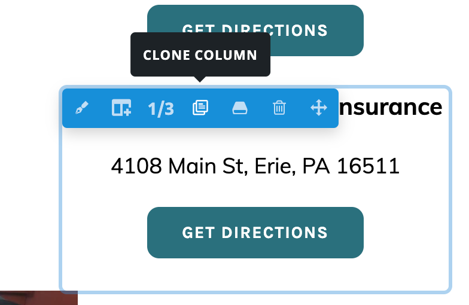
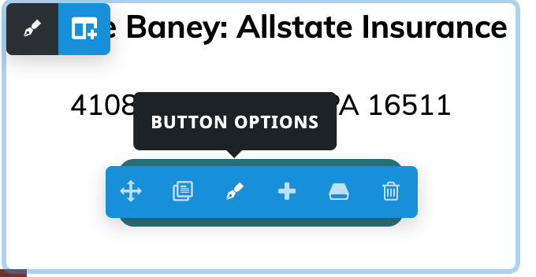
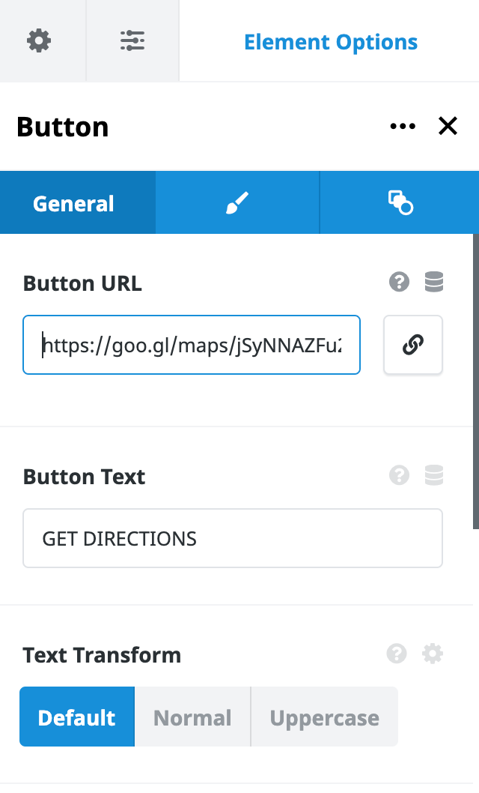
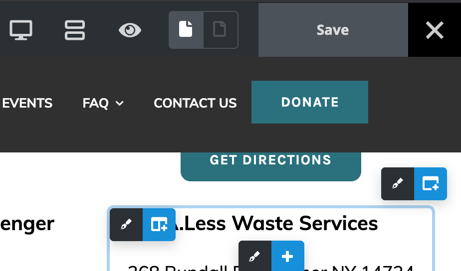

Site Documentation
Prepared by Ryan A. Scott
Updated May 15, 2021.
The Paula S. Cousins Ovarian and Endometrial Cancer Foundation's website is developed by Partnership Erie, an Outreach Program of the Black School of Business at Penn State Erie, The Behrend College. It is developed using the content-management-system (CMS) known as WordPress and utilizes the Avada by Themefusion template/builder. Avada offers extensive documentation that can be accessed by clicking the following link:
Avada Docs
Quick Links
Logging into your Site
- Navigate to www.paulaspromise.org/wp-admin
- Input your username/email address and password and click the blue "Log In" button
- The dashboard will now be loaded. This is the backend of your website. This page shows basic website information, but it is not often used besides when logging in.

- The grey sidebar on the left side of the screen is where you primarily will be using your site
Adding New Users/New Administrators
- The main purpose of adding users is if you want to grant someone access to the backend of the site and assist/handle/manage the users, pages, events, or anything else administrative on the website
- Navigate to www.paulaspromise.org/wp-admin
- Once logged in, click on "Users" in the grey sidebar
- All users will be displayed in a table on this page.
- To add a new user, click the "Add New" Button in the top left of the screen.

- A form to enter in user information will now be displayed. Input username and email, and save the password for later or change it to something easier here, after clicking “Show Password”.
- To give users full access to the site, in the “Role” drop down box, select “Administrator”
- Once you are completed inputting information, click the “Add New User Button”
Utilizing Contact Forms
The Contact Form and Comfort Bag Form automatically sends all inputs via email to paulaspromise@yahoo.com and a stored database on the backend of the website. In order to access the database:
- Navigate to www.paulaspromise.org/wp-admin
- Once logged in, Navigate to "Avada" on the grey sidebar.
- Select Forms
- To view entries, click "view entries" under the entries column for the respectful form (ex. contact form).
- To edit forms, click the name of the form you want to edit, and it will take you into the editor.
Adding/Editing Donation Locations
- Navigate to www.paulaspromise.org/wp-admin
- Once logged in, navigate to "Pages" on the grey sidebar.
- Select "Donate"
- Hover over the page name one wishes to edit, and click "Avada Live."
- Once the page loads, scroll down to the bottom to edit the location lists.
- Hover over the last of the current locations. In the top left of that box, a button will display. Upon hovering over the new button, a series of options will be displayed. Pick the clone option and select it.

- You will now have a copy and the content and can begin editing the information in it. During this time, you can also drag the column to the correct location by moving your cursor the button in the top left once more and clicking and holding your mouse.
- In order to edit the "Get Directions" button, hover over the button, and click the "button options" choice (it will look like a pencil). We recommend using the following service: by clicking here.

- You will need to input the address of the dropoff location and press "Submit"
- Then, select the "Copy Map Link" button and navigate back to your website backend.
- Paste the link in the "Button URL" box in the left sidebar.

- Press save in the upper right to save changes to the website and publish them.

Adding FAQs for the Member Section
The Member Section features a series of question and answers that can easily be edited from the WordPress Dashboard by using the following steps:
Edit Existing
- Navigate to www.paulaspromise.org/wp-admin
- Once logged in, click on "FAQs" on the grey sidebar.
- To edit an existing question, locate the question by using the page navigation on the bottom right of the site.
- Once the question one wants to edit is found, click the question text.
- The large text on top under "Edit FAQ Post" holds what is displayed on the page. The large text block underneath this section is what is displayed once a website user clicks on a question.
- After making the needed edits, click update on the right side to save changes and push them to the frontend of the site.
Add New
- Navigate to www.paulaspromise.org/wp-admin
- Once logged in, click on "FAQs" on the grey sidebar.
- Click "Add New" towards the top next to "FAQs"
- The title is suitable for the question/what one wants to be displayed. The large, white text block beneath this section is where the answer will go/what is revealed once a user selects a question.
- After adding a question and answer, it is crucial to locate "FAQ Categories" on the right of the screen and click "Member"
- Scroll back to the top and locate the blue publish button on the right of the screen.
Updating WordPress Plugins
You may have to update your website from time to time, and it is important to keep your plugins/resources updated. For the most part, you should be able to operate the site without updating any plugins but there are inherent security risks with using out of date software.
- Navigate to www.paulaspromise.org/wp-admin
- Once logged in, click on "Plugins" in the grey sidebar towards the bottom.
- The plugins page will now be displayed.
- In most cases, click the blank check mark box on the top of the table.

- Then click the “Bulk Actions” drop down box above the table
- Then select “Update” from the drop down box, and click the “Apply” button

- It may take a few minutes to update / respond. The table will reflect if an update has occurred
- You have now successfully updated your website plugins!